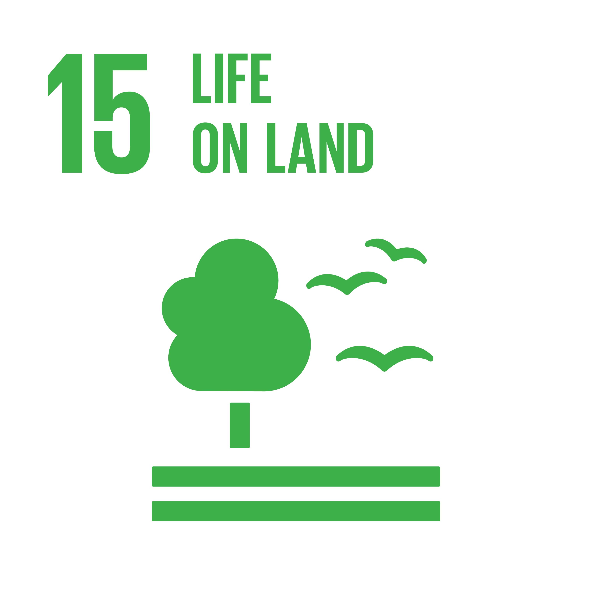
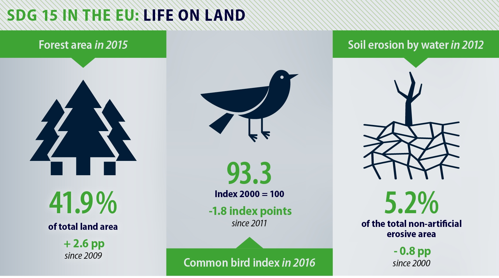

Protect, restore and promote sustainable use of terrestrial ecosystems, sustainably manage forests, combat desertification, and halt and reverse land degradation and halt biodiversity loss.
find out more info

Sustainable Development Goal 15 (SDG 15 or Global Goal 15) is about "Life on land." One of the 17 Sustainable Development Goals established by the United
Nations in 2015, the official wording is: "Protect, restore and promote sustainable use of terrestrial ecosystems, sustainably manage forests, combat desertification, and halt and reverse land degradation and halt biodiversity loss".[1] The
Goal has 12 targets to be achieved by 2030. Progress towards targets will be measured by 14 indicators.
The nine "outcome targets" include: Conserve and restore terrestrial and freshwater ecosystems; end deforestation and restore degraded forests; end desertification and restore degraded land; ensure conservation of
mountain ecosystems, protect biodiversity and natural habitats; protect access to genetic resources and fair sharing of the benefits; eliminate poaching and trafficking of protected species; prevent invasive alien species on land and in water
ecosystems; and integrate ecosystem and biodiversity in governmental planning. The three "means of achieving targets" include: Increase financial resources to conserve and sustainably use ecosystem and biodiversity; finance and incentivize
sustainable forest management; combat global poaching and trafficking.
Humans depend on earth and the ocean to live. This goal aims at securing sustainable livelihoods that will be enjoyed for generations to come. The human diet is composed 80% of plant life, which makes agriculture a
very important economic resource. Plant life provides 80 percent of the human diet, and we rely on agriculture as an important economic resources. Forests cover 30 percent of the Earth's surface, provide vital habitats for millions of species,
and important sources for clean air and water, as well as being crucial for combating climate change.

SDG 15l articulates targets for preserving biodiversity of forest, desert, and mountain eco-systems, as a percentage of total land mass. A "land degradation-neutral world" can be reached by restoring degraded forests
and land lost to drought and flood. Goal 15 calls for more attention to preventing invasion of introduced species and more protection of endangered species. Forests have a prominent role to play in the success of Agenda 2030, notably in terms
of ecosystem services, livelihoods, and the green economy; but this will require clear priorities to address key tradeoffs and mobilize synergies with other SDGs. Around 1.6 billion people depend on forests for their livelihoods, 2.6 billion
people depend directly on agriculture for a living, 80% of forests are home to more than 80 percent of all species of animals, plants and insects.
Some 31% of the earth's land surface is covered by forests. The world lost nearly 100 million ha of its forests. The extinction of species threatens sustainable development and compromises global heritage. It is mainly
due to habitat loss from unsustainable agriculture, harvest and trade, deforestation and invasive alien species. Efforts that could help to reverse those outcomes include sustainable forest management; gains in protected area coverage for
terrestrial, freshwater and mountain areas; and progress in implementing programs, legislation and accounting principles to protect biodiversity and ecosystems.